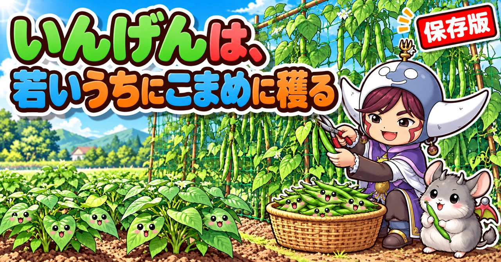
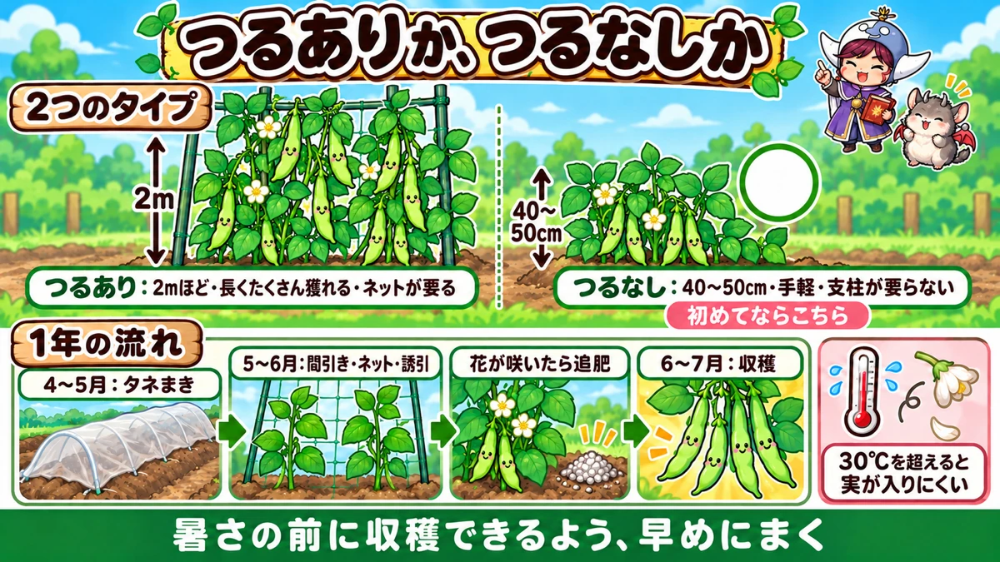
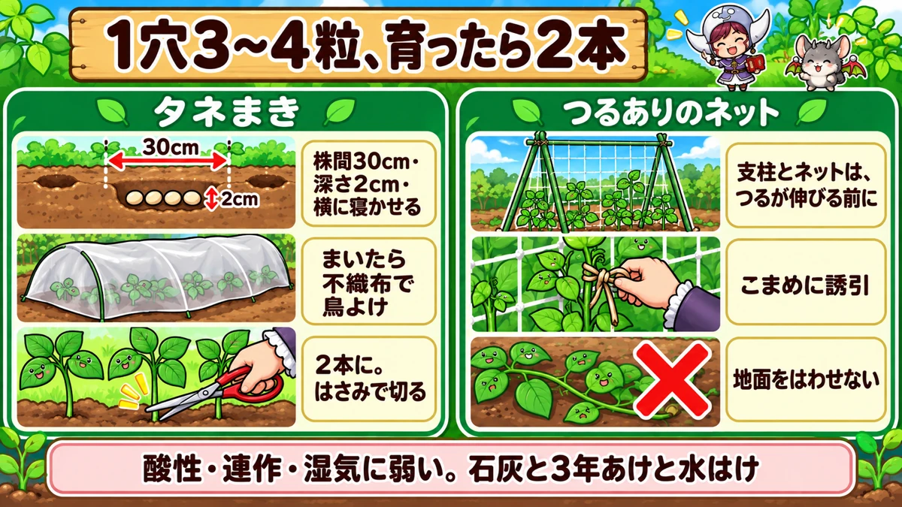
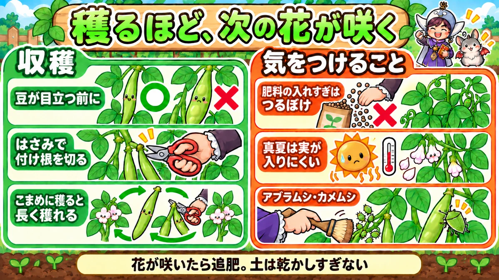

いんげんの育て方｜つるあり・つるなしの選び方、まき時、ネット張り、追肥、若どりで長く収穫するこつ

📖 この記事の目次
この記事で分かること
- いんげんには、2mほどに伸びる「つるあり」と、40〜50cmほどの「つるなし」があります。初めてなら、支柱やネットの要らないつるなしが手軽です。
- タネまきは、暖かくなった4月から5月ごろが中心です。つるなしは6月初めごろまで、夏に秋どりをねらってまく方法もあります。
- 暑さが苦手で、30℃を超えるような暑い時期は、花が咲いても実が入りにくくなります。暑さの前に収穫できるよう、時期を組み立てます。
- 酸性の土に弱く、連作にも弱いので、石灰で土を整え、同じ場所には3年ほどあけて植えます。湿気にも弱いので、水はけのよい場所に。
- 1つの穴に3〜4粒まき、育ったら2本に間引きます。まいたら鳥に食べられないよう不織布をかけます。
- 花が咲きはじめたら追肥をします。若いさやを早めに穫るほど、長く収穫が続きます。
いんげんは、育てやすく、たくさん穫れる、家庭菜園で人気の野菜です。ゆでても、炒めても、ごま和えにしてもおいしく、お弁当の彩りにも重宝します。「三度豆」と呼ばれることもあるように、時期をずらしてまけば、1年に何度か収穫を楽しめる野菜でもあります。
一方で、「花は咲くのに実がつかない」「つるが絡まって手がつけられなくなった」「芽が出ない」「さやがかたくなってしまった」という声もよく聞きます。この記事では、いんげんの育て方を、品種選びからタネまき、ネット張り、追肥、収穫、よくある失敗まで、順番に書いていきます。
早見：いんげんの基本
時期の目安（一般的な地域）
- タネまき：4月〜5月ごろ。つるなしは6月初めごろまで
- 夏まき：7月〜8月ごろにまいて、秋に収穫する方法もある（地域や品種による）
- 収穫：つるなしはまいてから2か月ほど、つるありはもう少し長く続く
数字の目安
- 株間：30cmほど
- タネをまく深さ：2cmほど
- 1穴にまく粒数：3〜4粒。育ったら2本に
- 草丈：つるありは2mほど、つるなしは40〜50cmほど
- 連作：3年ほどあける
大事なこと
- 酸性の土に弱い。石灰で整える
- 湿気に弱い。水はけよく
- 暑さに弱い。30℃を超えると実が入りにくい
- さやは若いうちに穫る

いんげんという野菜
さやを食べるいんげん、豆を食べるいんげん
ふだん野菜として食べている「さやいんげん」は、豆が育ちきる前の若いさやを食べるものです。一方、同じいんげんの仲間でも、さやの中の豆を育てきって、乾いた豆として収穫するものもあります。金時豆、うずら豆、大福豆、花豆などがそうで、煮豆や甘納豆の材料になります。
さやを食べるものと、豆を食べるものの違いは、主に収穫の時期の違いです。この記事では、さやを食べるさやいんげんを中心に書いていきます。
つるありとつるなし
- つるあり：つるが2mほどまで伸びる。支柱やネットが必要。収穫できる期間が長く、たくさん穫れる
- つるなし：草丈は40〜50cmほど。支柱やネットが要らず、手軽。収穫の期間は短めで、量も少なめ
「手軽さ」を選ぶならつるなし、「たくさん長く穫りたい」ならつるあり、と考えて選びます。ベランダのプランターや、狭い場所で育てるなら、つるなしが向いています。
暑さが苦手
いんげんは、もともと涼しい気候を好む野菜です。乾いた豆として育てる品種の多くが、北海道など涼しい地域でたくさん作られているのも、そのためです。気温が30℃を超えるような暑い時期は、花が咲いても実が入りにくくなり、花が落ちてしまうことも増えます。
だから、いんげんは、本格的な暑さが来る前に収穫できるよう、春のうちに早めにまくのが基本です。
品種の選び方
初めてなら、つるなし
支柱やネットを用意する必要がなく、管理が楽なので、初めてならつるなしがおすすめです。まいてから2か月ほどで収穫でき、短い期間で結果が出るのも楽しいところです。
たくさん穫りたいなら、つるあり
つるありは、ネットを張る手間はかかりますが、つるを伸ばしながら次々に花を咲かせるので、収穫できる期間が長く、量も多くなります。
さやの形も選べる
いんげんには、細長い丸いさやのもの、平たく幅の広いさやのもの（平さやいんげん）などがあります。食べ方の好みで選んでみてください。
安いタネでも育つ
いんげんのタネは、園芸店のほか、100円ショップなどでも少量で売られています。家庭菜園で数株育てるなら、少量のタネで十分です。品種名と、まく時期、収穫までの日数が袋に書かれているかを確かめて選びます。
タネは新しいものを
いんげんのタネは、寿命が比較的短く、古くなると芽が出にくくなります。去年やおととしのタネは使わず、その年に買ったタネを、その年のうちに使いきるようにします。余ったタネは、知り合いと分けあうのもよい方法です。
植える場所と土
酸性の土に弱い
いんげんは、酸性の土に弱い野菜です。土が酸っぱいと、根の育ちが悪くなります。タネをまく2週間ほど前までに、石灰を入れて土の酸っぱさを整えておきます。
連作に弱い
同じ場所に、いんげんなど豆の仲間を続けて植えると、育ちが悪くなりやすくなります。いんげんを植えた場所には、3年ほどあけてから、また植えるようにします。
湿気に弱い
水はけの悪い場所では、根が傷みやすく、病気も出やすくなります。水はけのよい場所を選ぶか、うねを高めにして植えます。
肥料は控えめに
豆の仲間は、根に住む菌（根粒菌）の力で、空気中の窒素を養分にすることができます。そのため、肥料、特に窒素はあまり要りません。元肥は、ほかの野菜より控えめにします。
ただ、いんげんは育つのが早く、根粒菌のはたらきだけでは養分が追いつかないこともあります。元肥を控えめにして、花が咲いたころに追肥で補う、という考え方がよく取られます。
- タネまきの2週間ほど前に、石灰と、控えめの堆肥や有機の肥料を入れて耕す
- うねを作って、マルチを張っておく
植える前の準備の流れ
1．タネまきの3週間ほど前：植える場所を決める。前の3年ほどに豆の仲間を植えていないか確かめる
2．2週間ほど前：石灰をまいて耕す。控えめの堆肥や有機の肥料も入れる
3．1週間ほど前：うねを作り、マルチを張る。つるありは支柱とネットの材料をそろえる
4．タネまき当日：不織布を用意しておき、まいたらすぐかける
植えつけの準備がととのってからタネや苗を買うと、慌てずにすみます。
タネまき
畑に直接まく
1．株間30cmほどで、深さ2cmほどの穴をあけます。
2．1つの穴に、タネを3〜4粒まきます。いんげんのタネは細長いので、横に寝かせて置きます。
3．まわりの土を寄せて穴を埋め、手で軽く押さえます。
4．たっぷり水をやります。
5．不織布をかけて、鳥にタネや芽を食べられないようにします。
市販のタネには、カビや病気を防ぐ薬で色がついているものがあります。素手でさわったら手を洗います。
ポットで苗を育てる
鳥の被害が多い場所や、早めに育てはじめたい場合は、ポットでまいて苗を育ててから植える方法もあります。
1．9cmほどのポットに培養土を入れ、タネを2〜3粒、横に寝かせて置き、1cmほど土をかぶせます。
2．たっぷり水をやります。
3．5〜6月の暖かい時期なら、保温は要りません。土が乾かないように水やりします。
4．1週間ほどで芽が出ます。
5．本葉が出はじめたころ、畑に植えつけます。
芽が出ないとき
- 寒すぎる時期にまいた：いんげんは寒さが苦手です。暖かくなってからまきます
- タネが古い：新しいタネを使います
- 水が多すぎてタネが腐った：まいたあと、土がずっと湿りすぎないようにします
- 深くまきすぎた：2cmほどの深さにします
- 鳥やナメクジに食べられた：まいたら不織布をかけ、芽が出たころは夜の見回りも
苗を買って植える場合
園芸店で、いんげんの苗が売られていることもあります。
- 本葉が2〜3枚の、若い苗を選ぶ。育ちすぎた苗は根づきにくい
- 葉の色が濃く、茎がしっかりしたものを選ぶ
- 葉の裏に虫がついていないか確かめる
- 植えるときは、根鉢をくずさないようにそっと植える。いんげんは根をいじられるのを嫌う
間引き
本葉が3〜4枚になったころ、1つの穴から2本を残し、ほかは間引きます。根が絡んでいることがあるので、引き抜かず、はさみで根元から切ると、残す株の根を傷めません。
土寄せ
タネまきが浅かったり、間引きで土が持ち上がったりして、根が見えている株は、株元に土を寄せて安定させます。いんげんは、根が乾いたり、地表に出たりすると育ちが悪くなります。

まいたあとの水やり
いんげんのタネは、水を吸いすぎると腐りやすくなります。まいたときにたっぷり水をやったら、芽が出るまでは、土の表面が乾いたときに軽く水をやる程度にします。毎日たっぷりやり続けると、タネが傷むことがあります。不織布をかけておくと、土の乾きすぎも防げます。
芽が出て双葉が開いたら、不織布は外します。そのままかけておくと、苗がひょろひょろと伸びてしまいます。
支柱とネット（つるありの場合）
芽が出たら、すぐに準備
つるありいんげんは、芽が出て本葉が育つと、すぐにつるが伸びはじめます。つるが伸びる前に、支柱とネットを用意しておきます。
ネットの張り方の例
1．2mほどの支柱を、うねの両側に立て、上で交差させて組みます（合掌式）。
2．交差したところに横の支柱を渡して、ひもで固定します。
3．きゅうり用のネットなどを、支柱にかけて張ります。
4．ネットの端を、クリップやひもで支柱に留めます。
支柱の立て方には、まっすぐ立てた支柱にネットを張る方法など、いくつかのやり方があります。風で倒れないよう、支柱は深めに差しこみます。
誘引する
伸びてきたつるは、ネットに絡ませます。つるが自然にネットに巻きつくまでは、ひもで軽く支柱やネットに留めてやります。
誘引をせずに放っておくと、つるが地面をはって四方八方に広がり、絡まり合って、手がつけられなくなります。そうなると、風通しが悪くなって病気が広がりやすくなります。つるが伸びはじめたら、こまめにネットへ誘導します。
ネットの高さと向き
つるありいんげんのネットは、2mほどの高さがあると、つるを十分に伸ばせます。手の届く高さを超えると収穫しにくくなるので、高すぎる場合は、つるの先を止める（摘む）か、ネットの上で横に這わせます。
うねの向きは、できれば南北にすると、ネットの両側に日が当たりやすくなります。東西のうねで、北側に日が当たりにくい場合は、ネットの南側にいんげん、北側には日陰でも育つ野菜を植える、という工夫もあります。
つるなしは支柱が要らない
つるなしいんげんは、草丈が低いので、基本的に支柱やネットは要りません。風の強い場所では、株元に土を寄せて、倒れないようにします。
つるの先を止める
つるありいんげんのつるがネットの上まで届いたら、先を摘んで止めると、下のほうの枝に養分が回り、脇から伸びるつるにも花がつきやすくなります。ネットの上で絡まり合って、風通しが悪くなるのも防げます。
追肥と水やり
花が咲いたら追肥
花が咲きはじめたころに、1回目の追肥をします。いんげんは育つのが早く、花が咲いてさやがつくころには、養分がたくさん必要になります。
- 株元から少し離れたところに、少量の肥料をまいて、土と軽く混ぜる
- つるありは、収穫が続く間、2〜3週間に1回くらい追肥する
- 窒素の多い肥料を入れすぎると、葉やつるばかり茂って、花やさやがつきにくくなる
水やり
いんげんは、湿気に弱い一方で、花が咲いてさやが育つ時期に土が乾ききると、花が落ちたり、さやが曲がったりします。
- ふだんは、土の表面が乾いたら水をやる程度
- 花が咲いてさやが育つ時期に雨が少なければ、朝のうちにたっぷり水をやる
- 水はけの悪い場所に、水をやりすぎない
収穫
収穫の手順
1．朝の涼しい時間に、収穫ばさみと、収穫物を入れるかごを持っていく
2．株の下のほうから順に、葉をかき分けてさやを探す。葉と同じ色なので、見落としやすい
3．穫りごろのさやを、付け根からはさみで切る
4．大きくなりすぎたさやも、見つけたら穫っておく（株を疲れさせないため）
5．つるの先や花を傷めないよう、つるを強く引っ張らない
若いうちに穫る
さやいんげんは、さやが若く、中の豆がまだ目立たないうちが穫りどきです。花が咲いてから10〜15日ほどで、さやが穫りごろの長さになります。
- さやの中の豆のふくらみが外から目立つようになると、さやがかたく、筋っぽくなる
- はさみで、さやの付け根を切って収穫する。手でもぐと、つるや花を傷めることがある
穫るほど、長く穫れる
さやを穫り遅れて、中の豆が育ちはじめると、株は豆を育てることに力を使い、新しい花をつける力が弱まります。若いうちにこまめに収穫するほど、新しい花が次々に咲いて、長く収穫が続きます。収穫が始まったら、2〜3日に1回は見回って、穫りどきのさやを穫ります。
乾いた豆として穫る場合
金時豆などの豆として育てる品種は、さやが黄色く枯れて、中の豆がかたく乾いてから収穫します。さやを食べるものより、収穫まで長くかかります。暑い時期をはさむと実が入りにくいので、早めにまくことが特に大切です。

梅雨どきの注意
いんげんの花が咲いて収穫が始まるころは、ちょうど梅雨の時期と重なります。
- 雨が続くと、湿気で病気が出やすくなる。下の古い葉を取り、株元の風通しをよくする
- つるが倒れたり、ネットからはずれたりしていないか、雨のあとに確かめる
- 泥はねを防ぐため、マルチや敷きわらで株元を覆っておく
- 雨の合間の晴れた日に、まとめて収穫する。さやがぬれたまま保存すると傷みやすい
反対に、梅雨に入っていない地域や、マルチをしていない畑では、さやがつく時期に土が乾きすぎることもあります。株元の土を指で少し掘って、乾いていれば水をやります。
夏から秋どりのいんげん
6月下旬まきで、秋に穫る
いんげんは、春にまくだけでなく、夏にまいて秋に収穫することもできます。たとえば、まいてから65日ほどで収穫できる品種を6月下旬にまくと、暑さが落ちつく9月から10月ごろに収穫できます。春のいんげんが暑さで実をつけなくなるころに、新しい株で秋の収穫をねらう、という考え方です。
暑さをやわらげる工夫
夏まきの苗は、強い日差しと暑さの中で育つことになります。
- 黒い遮光タイプのネットや寒冷紗で、直射日光をやわらげる
- タネまきのあと、土が乾きすぎないよう、朝のうちに水をやる
- 敷きわらなどで、株元の土の温度が上がりすぎるのを防ぐ
きゅうりのネットを引きつぐ
夏に終わりを迎えるきゅうりやかぼちゃの株元の近くに、つるありいんげんのタネをまいておき、きゅうりが枯れてきたら、その支柱とネットをいんげんに使う、という方法もあります。支柱やネットを張り直す手間がはぶけて、畑を続けて使えます。ただし、同じ場所にうりの仲間の病気や虫が残っていないかは、気をつけて見ておきます。
乾いた豆として育てる
金時豆、大福豆、花豆など
煮豆にする金時豆や大福豆、花豆なども、いんげんの仲間です。乾物として売られている豆をまいて育てることもできます（すべての豆が芽を出すとは限りません）。
早まきが大事
乾いた豆として収穫するには、さやが枯れて豆が育ちきるまで、まいてから3か月ほどかかります。真夏の暑さの中で花が咲くと実が入りにくくなるので、梅雨明けまでに収穫できるよう、3月中旬から下旬の早い時期にまくのが大切です。
- 寒い時期のまきはじめは、不織布をべたがけし、その上に穴のあいたビニールのトンネルで保温する
- 水はけのよい高めのうねに、黒いマルチを張る
- 夏の暑さを避けるため、半日陰になる場所があれば、そこで育てるのもよい
肥料はほとんど要らない
ほかの野菜を育ててきた土なら、肥料を入れずに始められます。土がやせていて心配な場合は、株のまわりに少量の有機の肥料と、草木灰を少しまく程度にします。
収穫と乾燥
さやが黄色から茶色に枯れて、振ると中で豆がからからと鳴るくらいになったら収穫します。雨に当てないよう、晴れた日に株ごと抜くか、さやを摘み取って、風通しのよい場所でさらに乾かしてから、豆を取り出します。
片づけ
収穫が終わったら
- 株を根ごと抜く。根に小さな粒（根粒）がついているのは、豆の仲間の根にすむ菌のすみかで、病気ではない
- つるがネットに絡みついている場合は、根元で切って、枯れるのを待ってからはずすと、はずしやすい
- 病気の出た株は、畑の外へ持ち出す。元気だった株は、刻んで堆肥にしてもよい
- ネットや支柱は、土を落として乾かしてからしまう
次に植える野菜
いんげんのあとの土には、根粒菌のはたらきで、窒素が少し残っていることがあります。次は、葉物など、豆の仲間以外の野菜を植えます。
虫と病気
見回りのポイント
- 芽が出たころ：鳥やナメクジの食べ跡がないか
- つるが伸びはじめたころ：つるの先にアブラムシがついていないか、ネットに誘引できているか
- 花が咲くころ：花が落ちていないか、土が乾きすぎていないか
- さやがつくころ：カメムシがいないか、穫り遅れのさやがないか
アブラムシ
芽が出たばかりの苗や、つるの先の新芽に、アブラムシがつくことがあります。新芽はとても細く折れやすいので、手でつぶそうとして先を折らないよう、刷毛で払うか、水で洗い流します。
ナメクジ、鳥
まいたばかりのタネや、芽が出たばかりの苗は、鳥やナメクジに食べられやすい時期です。不織布をかけて守り、芽が出たころは、夜にナメクジがいないか見回ります。
カメムシ
さやがつくころから、カメムシがさやの汁を吸うことがあります。吸われたさやは、まだらに変色したり、曲がったりします。朝夕に株をゆすって、落ちたカメムシを取ります。
バッタ
若い葉を、バッタに食べられることがあります。小さいうちに見つけたら取ります。
ハダニ
暑く乾いた時期に、葉の裏に小さなダニがついて汁を吸い、葉の表に白っぽいかすれたような点が広がることがあります。葉の裏に水をかけると、数を減らせます。乾燥が続くときは、葉の裏までしっかり見ます。
病気
湿気が多く、風通しが悪いと、葉や茎に病気が出やすくなります。
- つるを誘引して、葉が混みあわないようにする
- 下の古い葉や、黄色くなった葉を取る
- 水はけのよい場所で育てる
いっしょに植えるとよい野菜
時期をずらしてまく
いんげんは、まいてから収穫までが比較的早い野菜です。2〜3週間ずつ時期をずらして何回かに分けてまくと、収穫の時期が重ならず、長い期間、穫れたてのいんげんを楽しめます。一度にたくさん穫れすぎて食べきれない、ということも防げます。
つるなしは混植しやすい
つるなしいんげんは、草丈が低く、ほかの野菜の間にも植えやすい野菜です。限られた場所を有効に使うために、ほかの野菜といっしょに植える（混植する）方法もあります。なすやさつまいも、とうもろこしなどとの組み合わせがよく紹介されます。
つるありととうもろこし
つるありいんげんを、とうもろこしの株元にまいて、とうもろこしを支柱代わりにしてつるを絡ませる、という昔ながらの組み合わせもあります。ただし、いんげんのつるがとうもろこしを覆いすぎないよう、まく時期をずらすなどの工夫が必要です。
なす、ピーマンとの組み合わせ
なすやピーマンの株の間に、つるなしいんげんを植えると、いんげんの根にすむ菌が窒素を取りこみ、まわりの土を少しずつ豊かにする、という考え方があります。また、地面をおおう葉が、土の乾きすぎを防ぐ役割もします。ただし、株と株の間が狭すぎると、互いに日当たりや風通しが悪くなるので、間隔に余裕をもたせて植えます。
プランターで育てる
つるなしが向いている
プランターで育てるなら、つるなしいんげんが向いています。
- 深さ20cm以上、幅60cmほどのプランターなら、2〜3か所にまける
- 1か所に3〜4粒まき、育ったら2本に
- 野菜用の培養土を使えば、石灰や元肥は要らないことが多い
- 土の表面が乾いたら水をやる。花の時期は乾かしすぎない
- 花が咲いたら、少量の追肥
季節ごとにやること（一般的な地域の目安）
- 3〜4月：植える場所を決め、石灰と堆肥を入れて耕す。連作になっていないか確かめる
- 4〜5月：タネまき。不織布で鳥よけ。つるありは支柱とネットを準備
- 5〜6月：間引き、土寄せ、誘引。アブラムシに注意。花が咲いたら追肥
- 6〜7月：収穫。2〜3日に1回、若いさやを穫る。暑くなると実が入りにくくなる
- 7〜8月：夏まきで秋どりをねらう場合は、暑さの落ちつく時期に花が咲くようにまく
- 9〜10月：秋どりのいんげんを収穫。片づけ
いんげんに似た豆
十六ささげ
十六ささげは、いんげんとは別の豆の仲間ですが、細長いさやを食べる点は似ていて、味も近いものです。皮が薄く、やわらかい食感を好む人もいます。ささげは暑さに強く、真夏でもよく育つので、暑い地域で夏にさやを食べる豆を育てたい場合は、ささげを選ぶのも1つの方法です。
説明が分かれるところ
肥料は要るか
豆の仲間だから肥料は要らない、という考え方と、いんげんは育つのが早く、花が咲くころには追肥が必要、という考え方があります。元肥は控えめにして、花が咲いたころの株の様子を見て追肥する、というのが多くの説明に共通するところです。新しく耕したばかりの畑など、根粒菌が少ない土では、葉の色が淡くなりやすいので、追肥で補います。
前の作付けのあとなら、肥料は要らないか
前にほかの野菜を育てていた場所なら、元肥も追肥も要らない、順調に育っていれば追肥しなくてよい、という考え方もあります。いんげんは、肥料、特に窒素が多すぎると、つるや葉ばかり茂って、さやがつきにくくなる「つるぼけ」になりやすいからです。
一方で、花が咲くころに追肥をする、という説明も多くあります。葉の色が全体に黄緑っぽく、育ちが悪い場合は追肥を考え、葉の色が濃く、つるが勢いよく伸びている場合は追肥を控える、と、株の様子で決めるのが安心です。
夏まきはできるか
暑さが苦手なので、夏まきはむずかしい、という考え方がある一方、7〜8月にまいて、暑さの落ちつく秋に花を咲かせれば、秋に収穫できる、という考え方もあります。つるありは暑さに弱いので、夏は避けたほうがよいという意見もあります。地域の気候に合わせ、花の時期が真夏に重ならないように組み立ててください。
直まきか、ポットまきか
畑に直接まくのが一般的ですが、鳥の被害が多い場所や、寒さが残る時期に早めに始めたい場合は、ポットで苗を育てるのも1つの方法です。
よくある失敗
花は咲くのに、さやがつかない
暑さ（30℃を超える）、水不足、肥料（窒素）の効きすぎ、などが考えられます。暑さの前に収穫できるよう早めにまく、花の時期は乾かしすぎない、肥料を入れすぎない、を見直します。
つるが絡まって、手がつけられなくなった
つるが伸びはじめたら、すぐにネットへ誘引します。地面をはわせないようにします。
さやがかたく、筋っぽい
穫り遅れです。豆のふくらみが目立つ前に穫ります。
芽が出なかった
寒すぎる、タネが古い、水が多すぎる、深すぎる、鳥やナメクジ、などを見直します。
同じ場所に毎年植えた
連作で育ちが悪くなりやすくなります。3年ほどあけます。
よくある質問
葉の色が黄緑っぽく、育ちが悪いです
新しく耕したばかりの畑など、豆の仲間をしばらく育てていない土では、根粒菌が少なく、窒素が足りなくなって、葉の色が淡くなることがあります。その場合は、株元から少し離して少量の肥料を追肥します。酸性の土で育ちが悪くなっていることもあるので、次からは石灰で土を整えておきます。
ベランダで、つるありを育てられますか
日当たりのよいベランダなら、深めの大きなプランターに支柱を立て、ネットやひもでつるを誘引すれば、つるありも育てられます。ただし、つるが2mほどに伸びるので、手すりより上に伸びて、風であおられることがあります。支柱をしっかり固定し、高さを確かめてから育ててください。
花が落ちるのはなぜですか
いんげんの花が落ちる原因には、暑さ、水不足、肥料の効きすぎ、日当たりの悪さなどがあります。株が多くの花をつけて、すべてを実にできずに自分で落とすこともあります。真夏の暑さで花が落ちる場合は、涼しくなると、また実がつきはじめることがあります。
さやいんげんと、ささげは同じですか
ささげは、いんげんとは別の豆の仲間です。さやを食べる点は似ていますが、ささげは暑さに強く、夏でもよく育ちます。暑い地域で夏にさやを食べる豆を育てたいなら、ささげを選ぶのも1つの方法です。
1株からどのくらい穫れますか
品種や育て方によって違いますが、つるありのほうが、つるなしより収穫できる期間が長く、量も多くなります。こまめに若いさやを穫ることで、収穫の量は増えます。
支柱の代わりに、何を使えますか
市販の園芸ネットのほか、ひもを上下に張ってつるを絡ませる方法もあります。夏の終わりに片づけるきゅうりやゴーヤのネットを、そのまま使う方法もあります。つるは2mほど伸び、実がつくと重くなるので、支柱はしっかり固定します。
さやが曲がってしまいます
さやが曲がる原因には、花の時期の水不足、肥料切れ、カメムシに吸われた、などがあります。株の様子と、まわりの虫を確かめてください。曲がったさやも、食べるのに問題はありません。
いんげんの葉が、まだらに黄色くなりました
葉に濃い緑と薄い緑のまだら模様が出て、新しい葉がちぢれる場合は、アブラムシがうつすウイルスの病気のことがあります。治す方法はないので、ほかの株にうつさないよう、早めに抜いて畑の外へ持ち出します。苗のうちからアブラムシを防ぐことが予防になります。
収穫したいんげんは、どう保存しますか
乾かないように袋に入れて、冷蔵庫の野菜室に入れ、早めに食べます。たくさん穫れたときは、さっとゆでてから冷凍しておくと便利です。
いんげんのあとに、何を植えればいいですか
豆の仲間のあとは、根粒菌のはたらきで土に窒素が少し残っていることがあります。葉物など、豆の仲間以外の野菜を植えます。
いんげんを一度にたくさん育てる必要はありますか
家族の人数にもよりますが、いんげんは次々に穫れるので、数株でも十分な量が穫れることがあります。つるなしなら、何回かに分けて少しずつまくほうが、穫れすぎて困ることがありません。
学ぶ：いんげんのしくみ🔬
なぜ、暑いと実が入りにくいのか
いんげんの花が実になるには、花粉が雌しべについて受粉し、そこから種子が育っていく必要があります。気温が高すぎると、花粉がうまくはたらかなくなったり、受粉しても実が育たずに花が落ちたりします。いんげんが暑さに弱いと言われるのは、主にこの「花から実へ」の段階が暑さに弱いからです。
なぜ、タネを横に寝かせてまくのか
いんげんのタネは、平たい側のまん中あたりに、芽と根が出てくる「へそ」があります。横に寝かせて置くと、根は下へ、芽は上へ、それぞれ自然な向きで伸びやすくなります。いんげんの芽は、双葉の部分を持ち上げながら土から出てくるので、深くまきすぎると土を押し上げきれず、芽が出にくくなります。2cmほどの浅めにまくのはそのためです。
なぜ、酸性の土に弱いのか
豆の仲間の根には、根粒菌という菌がすんでいて、空気中の窒素を植物が使える形に変えてくれます。この根粒菌は、酸性の強い土では元気にはたらけません。土が酸性に傾いていると、根粒菌の助けが得られず、いんげんの育ちも悪くなります。石灰で土を整えることは、根粒菌がはたらきやすい環境を作ることでもあるのです。
なぜ、こまめに穫ると長く穫れるのか
植物は、子孫を残すために花を咲かせ、実の中の種を育てます。さやを穫らずに置いておくと、中の豆が育ち、株は「種を残せた」とばかりに、新しい花を咲かせる力を弱めていきます。若いさやを次々に穫ると、株は「まだ種を残せていない」と、花を咲かせ続けます。こまめに穫るほど長く収穫が続くのは、このためです。
なぜ、つるは巻きつくのか
つるありいんげんのつるの先は、ゆっくりと円を描くように回りながら伸び、何かにふれると、それに巻きついていきます。こうして、まわりのものを支えにして、より高いところへ葉を広げ、日の光をたくさん受けようとしているのです。ネットに誘引してやると、つるは自分から巻きついて、上へ上へと伸びていきます。
まとめ
ここまで読んでくださって、ありがとうございます！今年のいんげんがうまくいかなかった方も、来年の参考にしていただけたらうれしいです。
いんげんの育て方のポイントを、もう一度まとめておきます。
- 初めてならつるなし。たくさん長く穫るならつるあり（支柱とネットが要る）
- タネまきは4〜5月ごろ。つるなしは6月初めごろまで。暑さの前に収穫を
- 酸性と連作と湿気に弱い。石灰で整え、3年あけ、水はけよく
- 1穴3〜4粒、株間30cmほど、深さ2cmほど。不織布で鳥よけ
- 本葉3〜4枚で2本に。間引きははさみで
- つるありは、つるが伸びる前にネット。こまめに誘引
- 花が咲いたら追肥。肥料の入れすぎに注意
- 花の時期は土を乾かしすぎない
- さやは若いうちに、はさみで。こまめに穫るほど長く穫れる
- タネは新しいものを使う
- 夏の終わりに秋どりのいんげんをまく方法もある。乾いた豆として育てるなら3月中旬〜下旬の早まきで
- 2〜3週間ずつずらしてまくと、長い期間、穫れたてを楽しめる
いんげんは、ちょっとしたこつを押さえれば、次々に実をつけてくれる、育てがいのある野菜です。暑さの前に収穫できるように時期を組み立てること、肥料を入れすぎないこと、そして若いうちにこまめに穫ること。この3つを覚えておけば、たくさんの収穫が楽しめます。まずは春に、つるなしいんげんのタネを、1つの穴に3〜4粒、まいてみてください🫘
きゅうりネット
つるありいんげんの誘引に。2mほどの支柱に張って、伸びてきたつるを絡ませます。
![[商品価格に関しましては、リンクが作成された時点と現時点で情報が変更されている場合がございます。]](https://hbb.afl.rakuten.co.jp/hgb/56d221a0.da732c49.56d221a1.b57a6709/?me_id=1230952&item_id=10006162&pc=https%3A%2F%2Fthumbnail.image.rakuten.co.jp%2F%400_mall%2Fnou-nou%2Fcabinet%2Fnousi2%2F0108008000005.jpg%3F_ex%3D240x240&s=240x240&t=picttext "[商品価格に関しましては、リンクが作成された時点と現時点で情報が変更されている場合がございます。]")

支柱
合掌式に組んでネットを張ります。実がつくと重くなるので、深めに差してしっかり固定します。
![[商品価格に関しましては、リンクが作成された時点と現時点で情報が変更されている場合がございます。]](https://hbb.afl.rakuten.co.jp/hgb/56d221a0.da732c49.56d221a1.b57a6709/?me_id=1230952&item_id=10017113&pc=https%3A%2F%2Fthumbnail.image.rakuten.co.jp%2F%400_mall%2Fnou-nou%2Fcabinet%2F5010356000109-01.jpg%3F_ex%3D240x240&s=240x240&t=picttext "[商品価格に関しましては、リンクが作成された時点と現時点で情報が変更されている場合がございます。]")
不織布
タネをまいたらすぐかけて、鳥にタネや芽を食べられないようにします。芽が出たら外します。
![[商品価格に関しましては、リンクが作成された時点と現時点で情報が変更されている場合がございます。]](https://hbb.afl.rakuten.co.jp/hgb/56bc237a.e97551b1.56bc237b.2513ed10/?me_id=1310260&item_id=10000879&pc=https%3A%2F%2Fthumbnail.image.rakuten.co.jp%2F%400_mall%2Fdiokasei%2Fcabinet%2F007fusyokufu%2F12g%2Fimgrc0092049705.jpg%3F_ex%3D240x240&s=240x240&t=picttext "[商品価格に関しましては、リンクが作成された時点と現時点で情報が変更されている場合がございます。]")
次に読む
記事一覧へ